Z-Axis Assembly
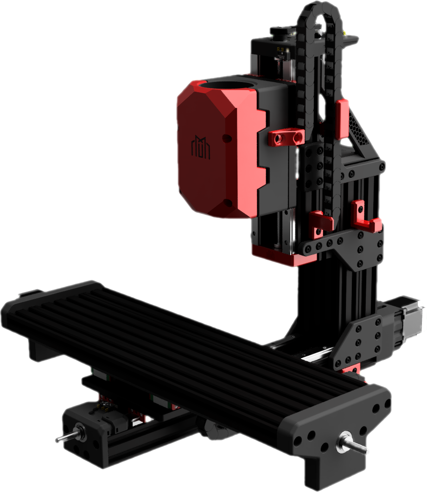
Identifying Extrusions
This section of the build contains a number of C-beams that are close together. To help you identify which parts are which, lay out your extrusions like the diagram shown below. The next steps will then highlight which extrusions are used for each step.
Components Required
A: Openbuilds 4080x260mm C-Beam
B: Openbuilds 4080x260mm C-Beam
C: Openbuilds 4080x250mm C-Beam
D: Openbuilds 4080x120mm C-Beam
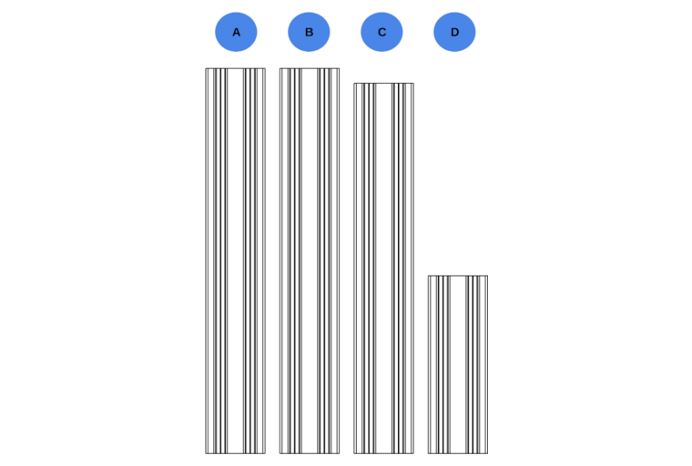
Extrusions A and B are the main Z-column extrusions.
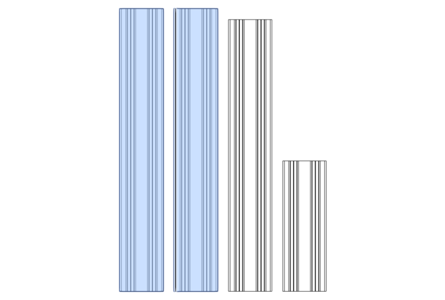
FMJ
Full Metal Jacket Installation
If you have Full Metal Jacket plates instead of the 3D printed column joining plates, please refer to the FMJ Assembly guide. Once complete, you can return to the Lower Bearing Block section and continue your Z-Axis assembly.
Installing the Column Plates
Components Required
20 x M5x12mm BHCS
1 x Joining Plate B (1)
1 x Joining Plate C (2)
1 x Joining Plate B Mirror (3)
1 x Joining Plate C Mirror (4)
- Print this part using the recommended settings!
- Print this part using the recommended settings!
- Print this part using the recommended settings!
- Print this part using the recommended settings!
Place extrusions A and B facing each other, creating an internal channel. This is where the ballast box can be installed (later, calm down cowboy!).
Install Joining Plate B and Joining Plate C on one side, using M5x12 BHCS to hold the extrusions together.
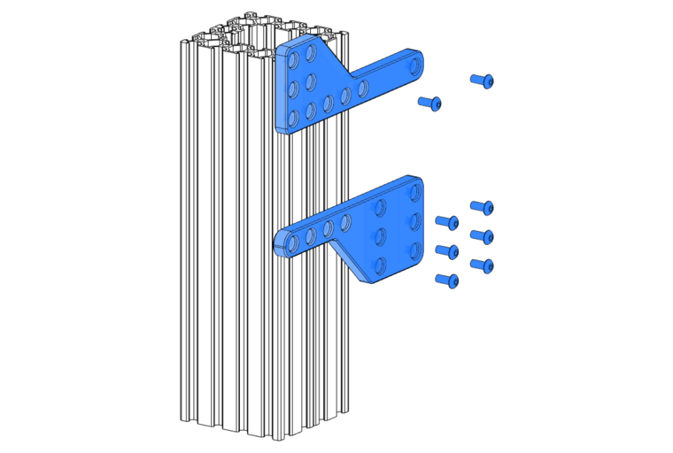
Tip
Make sure there is a 67mm vertical spacing between the lower and upper column plates. The top of the thin part of the uppermost column plate should be flush with the top surface of the C-Beams.
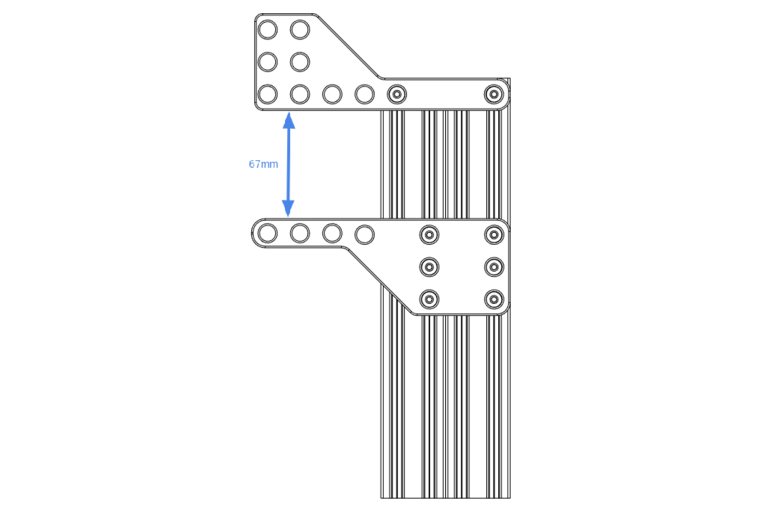
Select extrusion D.
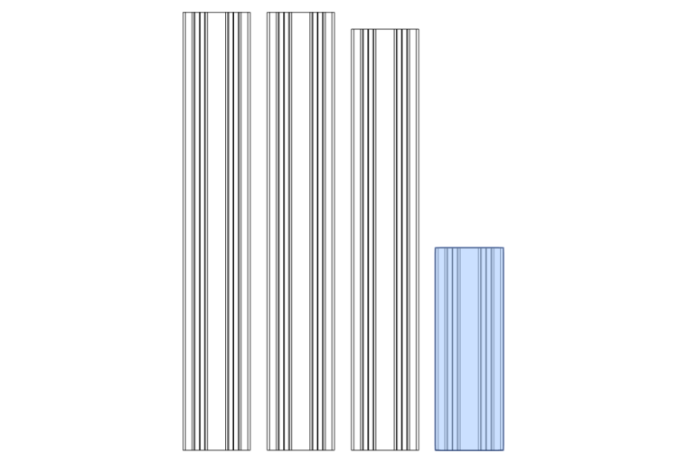
Place extrusion D at the top of the column with the channel facing outwards.
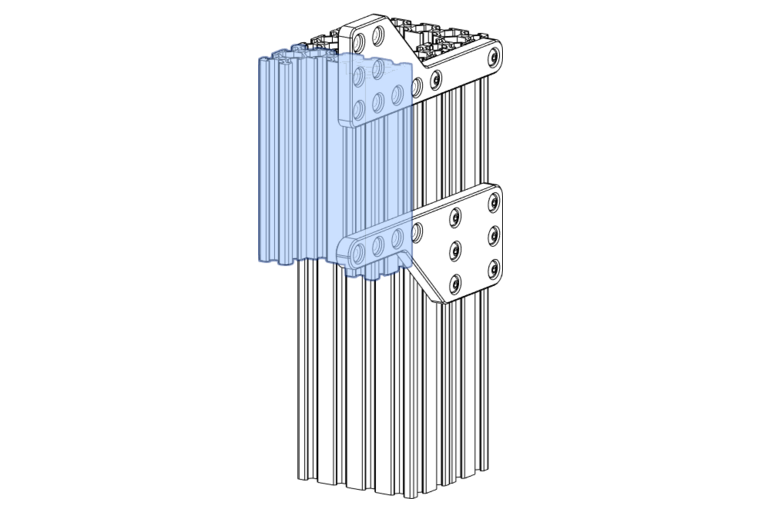
Use M5x12 BHCS to hold the extrusion in place against the column.
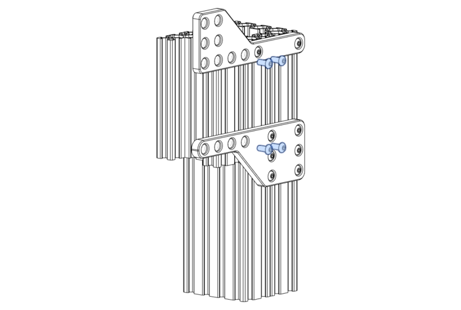
Select extrusion C.
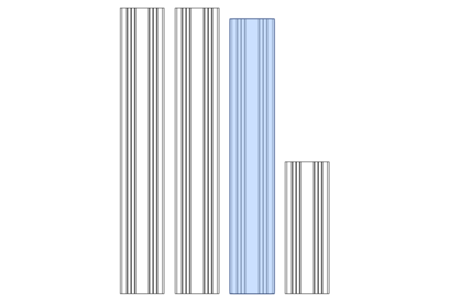
Place it on the front of extrusion D, again with the channel facing outwards.
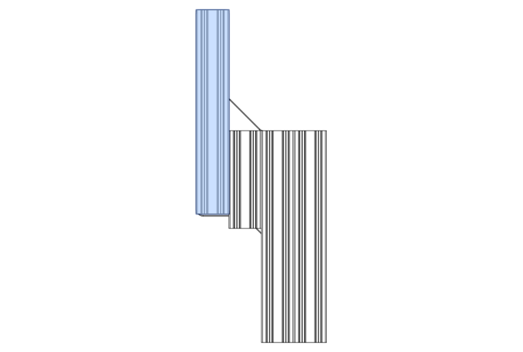
Tip
The lower edge of extrusion C should be 18mm above the lower edge of extrusion D, making room for the lower bearing block.
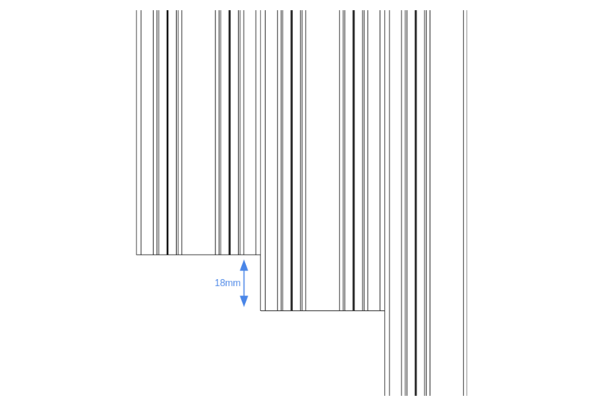
Use M5x12 BHCS to hold the extrusion in place against the column.
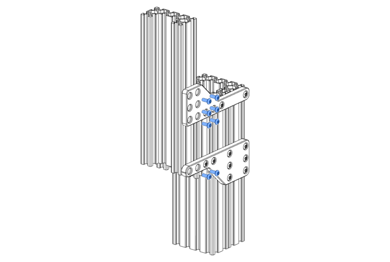
At this point, you can install Joining Plate B Mirror and Joining Plate C Mirror on the other side of the column, taking care to align them with the plates on the other side.
Lower Bearing Block
Components Required
4 x M5x12mm BHCS
1 x 608ZZ bearing
1 x Z-Axis Bearing Block (1)
- Print this part using the recommended settings!
Push the 608ZZ bearing into the bearing block until it is flush.
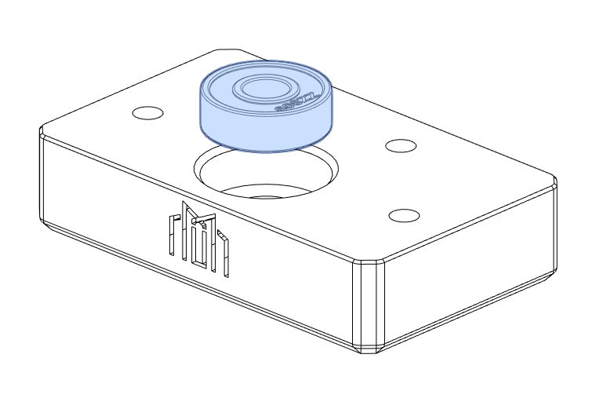
Use M5x12mm BHCS to attach the bearing block to the bottom of extrusion C.
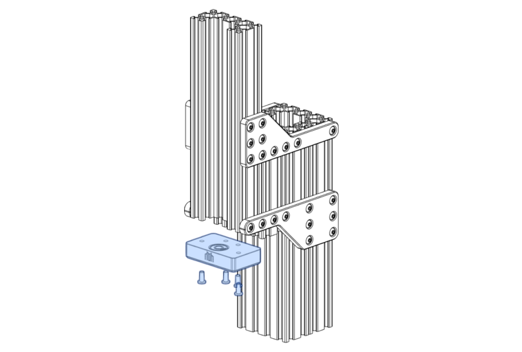
Ballast Box
The ballast box is designed to house a damping load such as sand or epoxy granite. It is not a requirement but is recommended.
Components Required
1 x Ballast Box (1)
1 x Ballast Cap (2)
- Print this part using the recommended settings!
- Print this part using the recommended settings!
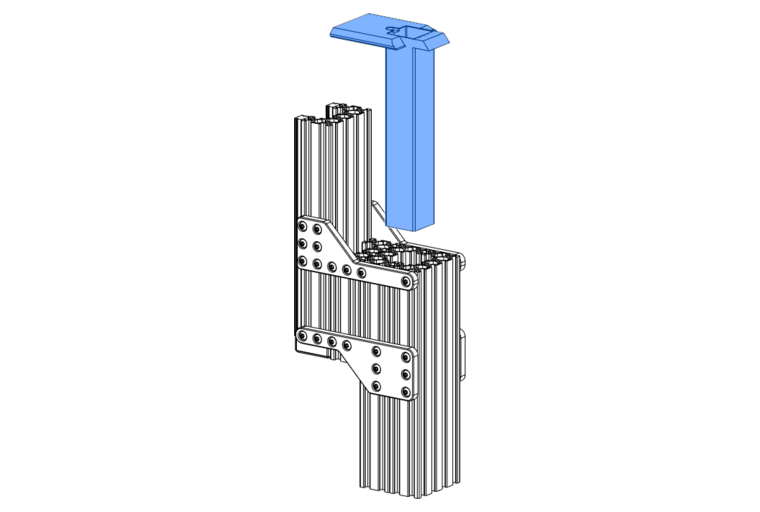
Tip
There is a small lip in the ballast box which registers with the tongue on the ballast cap. This is easiest to install at an angle.
Warning
Once the ballast top is installed, it can be difficult to remove. Be sure that no other steps need to be taken before sealing the lid.
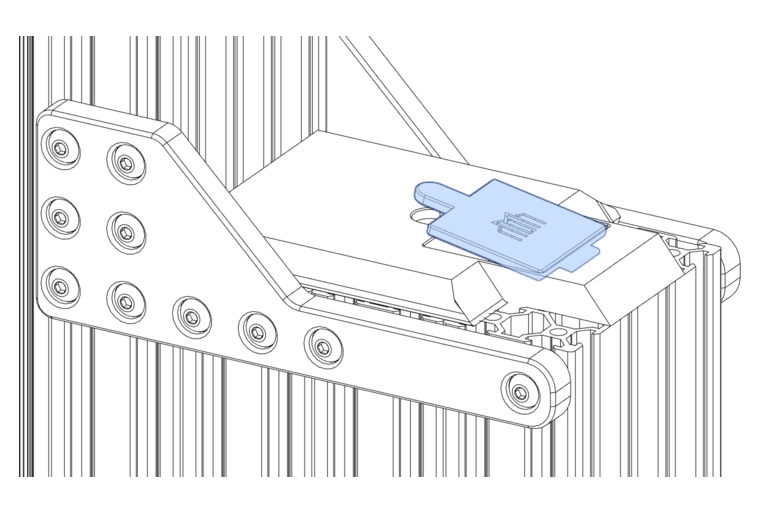
Z-Axis Anti-Backlash Nut
Components Required
4 x M3 Heat-Set Insert
4 x M3x8mm SHCS
2 x M5 Heat-set Insert
2 x Brass Lead-screw Nut
1 x Locking Collar
1 x Z-Axis Anti-Backlash Nut (1)
- Print this part using the recommended settings!
Insert the M3 and M5 heat-set inserts in the Z Axis Anti-Backlash Nut.

Fasten the Brass lead-screw nuts on either side of the Z Axis Anti Backlash Nut using M3x8mm SHCS. Remember to apply medium-strength thread-lock!

Insert the lead-screw into the anti-backlash nut and set the preload using the same technique as the X and Y nuts.
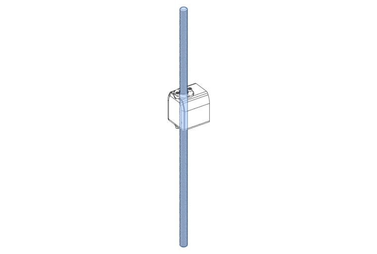
Place a locking collar onto the bottom of the lead-screw, and lock it in place. Remember to apply medium-strength thread-lock to the grub-screws!
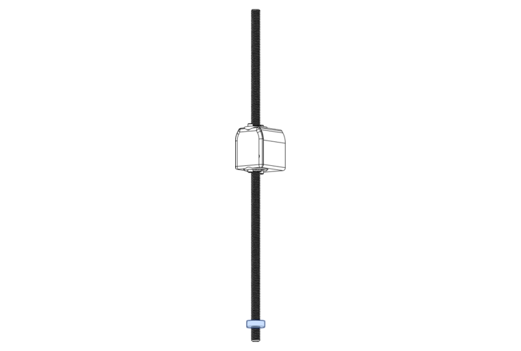
Tip
The locking collar should sit 13mm from the bottom of the lead-screw.
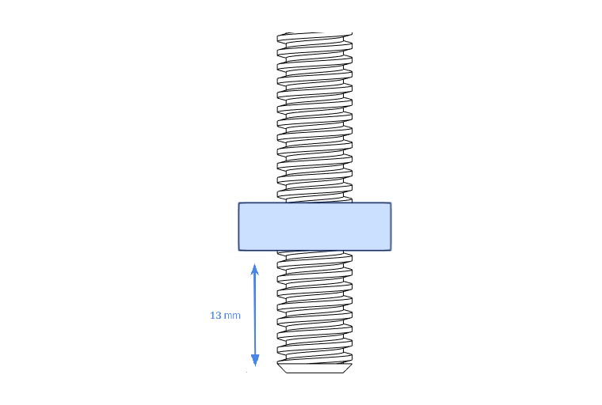
Z-Axis Rails and Lead-screw
Components Required
8 x M3x10mm SHCS
2 x Brass Lead-screw Nut
2 x MGN15 Rail 250mm
1 x Z-Axis Lead-screw
Note
If you followed the FMJ installation steps, your rails are already installed. Proceed to fitting the lead-screw!
Install the Z rails with only the lower carriages installed onto the C extrusion using M3x10mm SHCS. Make sure the end-most and centre-most bolt holes in each rail are used.
Use printed rail alignment guides to make sure the rails are aligned.
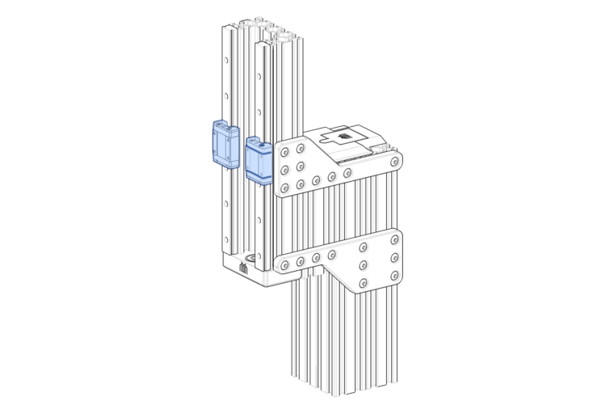
Tip
You can use the rail alignment guides to stop the lower carriages from falling off the vertical rail!
Place the lead-screw with the locking collar at the bottom into the bearing at the bottom of the Z-axis. The curved surface of the anti-backlash nut should face upwards.
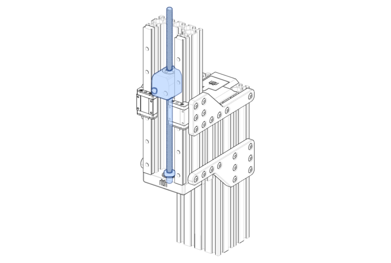
Install the upper rail carriages onto the Z rails, above the anti-backlash nut.
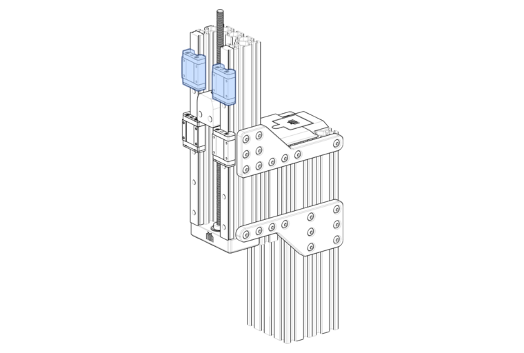
Z-Axis Mounting Plate and Motor Mount
Components Required
16 x M3x5mm SHCS
2 x M5x16mm BHCS
2 x 608ZZ Bearing
2 x M2.5 Heat-set Insert
1 x GT2 40T Pulley
1 x Locking Collar
1 x Z-Axis Mounting Plate (1)
1 x Z-Axis Motor Mount (2)
- For additional strength this part should be machined but it can be printed using the recommended settings if necessary.
- Print this part using the recommended settings!
Install the Z-Axis mounting plate onto the anti-backlash nut using M5x16mm BHCS.
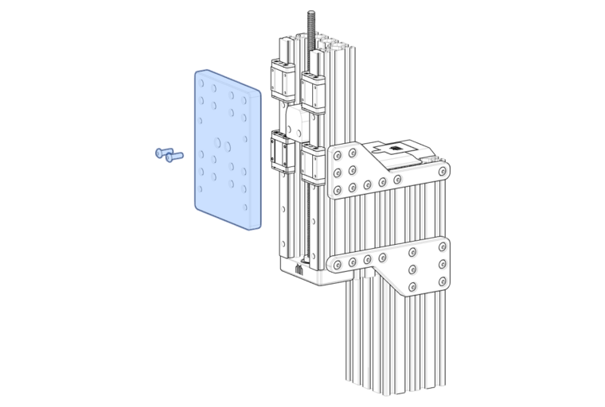
Attach the Z-Axis mounting plate to the carriages using M3x5mm SHCS.
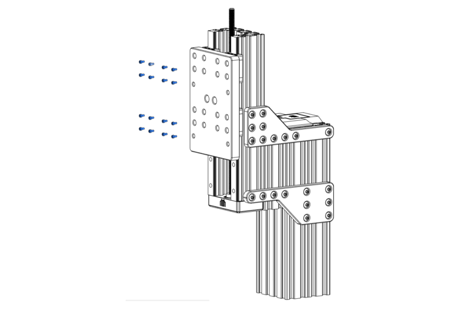
Insert the 608ZZ bearings into the Z-Axis motor mount, and insert M2.5 heat-set inserts for the Z endstop.
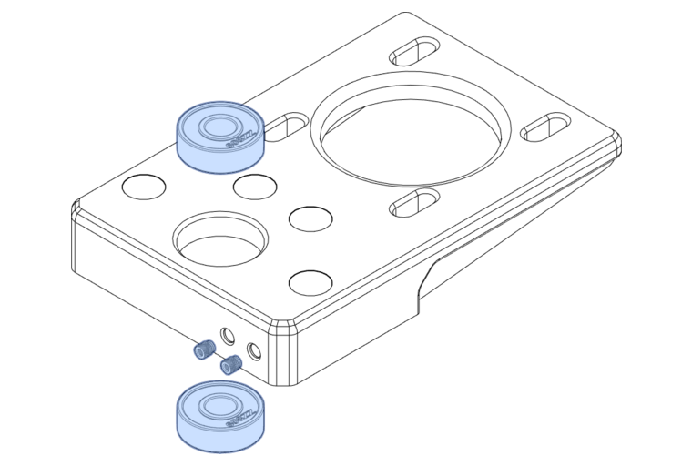
Place a locking collar on the lead-screw.
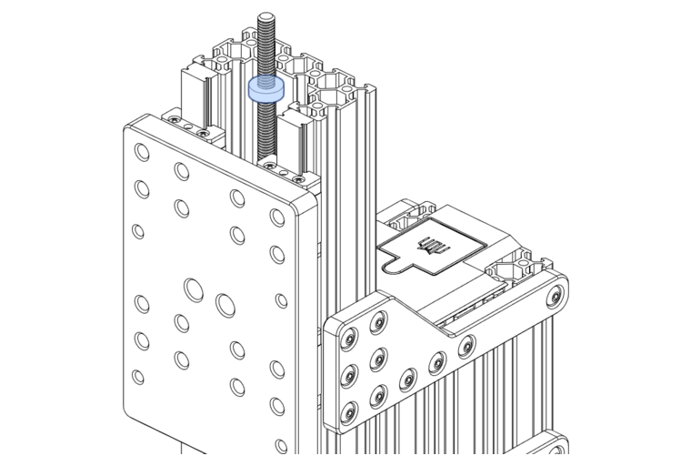
Tip
Tighten the collar slightly so that it stays in place. If you drop it at this point, it will be a pain to fish it out from behind the -Z-axis mounting plate!
Install the Z-Axis motor mount onto the top of the C-beam using M5x12mm BHCS.
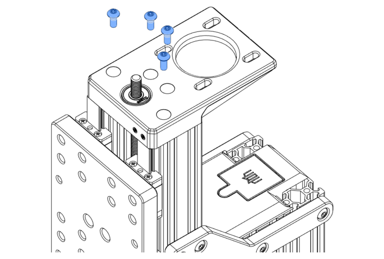
Fasten the GT2 40T Pulley onto the top of the lead-screw.
With the Pulley attached above the bearings, you can now loosen off the locking collar below the bearings. Push it upwards until it contacts the lower bearing and lock it in place.
Remember to apply medium-strength thread-lock to all the grub-screws!
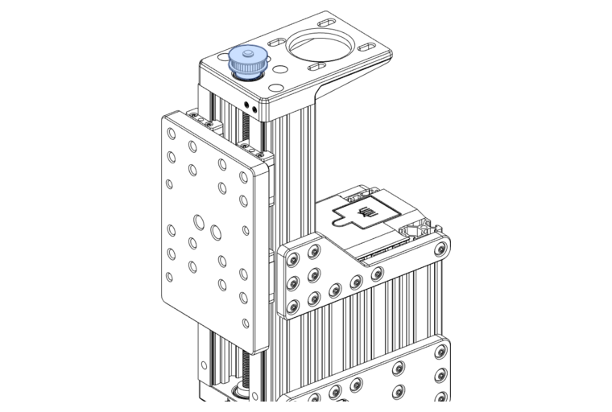
Z-Axis Motor
Components Required
4 x M5x20mm BHCS
4 x M5 Nyloc Nut
4 x M5 Washer
1 x NEMA23 Motor
1 x GT2 20T Pulley
1 x 200mm GT2 Belt
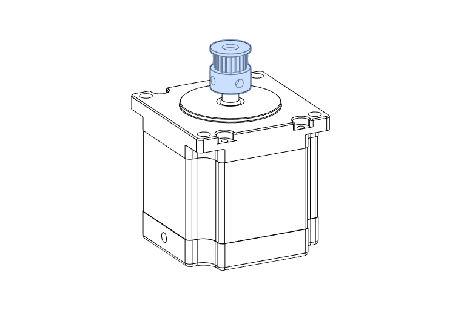
When installing the Z motor, attach your belt loosely around your lead-screw pulley and then slide your Z motor in at an angle.
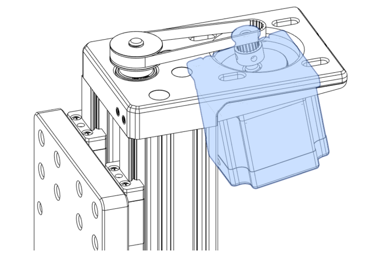
Attach the motor using M5x20mm BHCS with M5 washers and Nyloc nuts on the upper surface of the Z motor mounting plate.
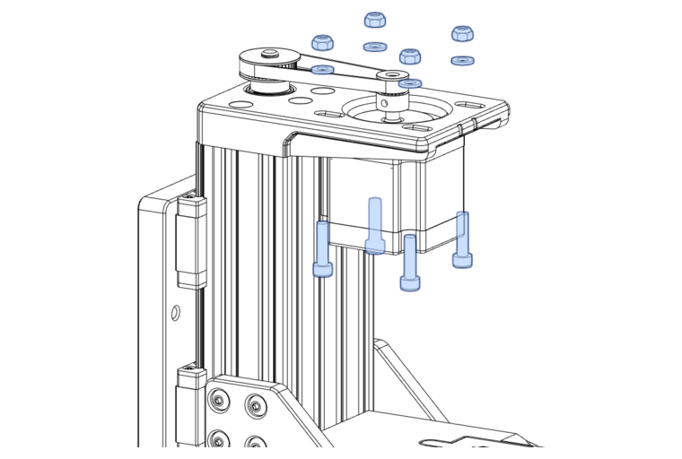
Info
Before tightening the fasteners fully, make sure the tension is set correctly. To do this, pull the motor away from the column with one hand until the belt can be strummed like a guitar string and then tighten the fasteners in opposing corners first.
Z-Axis Reinforcement Bracket
Components Required
4 x M5x12mm BHCS
2 x Z Reinforcement Bracket (1)
- Print this part using the recommended settings!
Note
If you have FMJ's on your Z-axis, these reinforcements are unnecessary.
Place the Z Reinforcement Brackets under the Z motor as shown below.
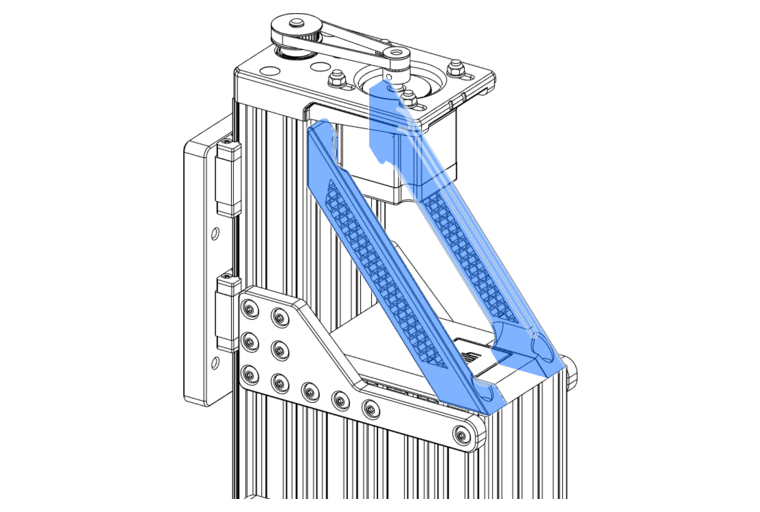
Attach the reinforcement brackets at the bottom using M5x12mm BHCS.
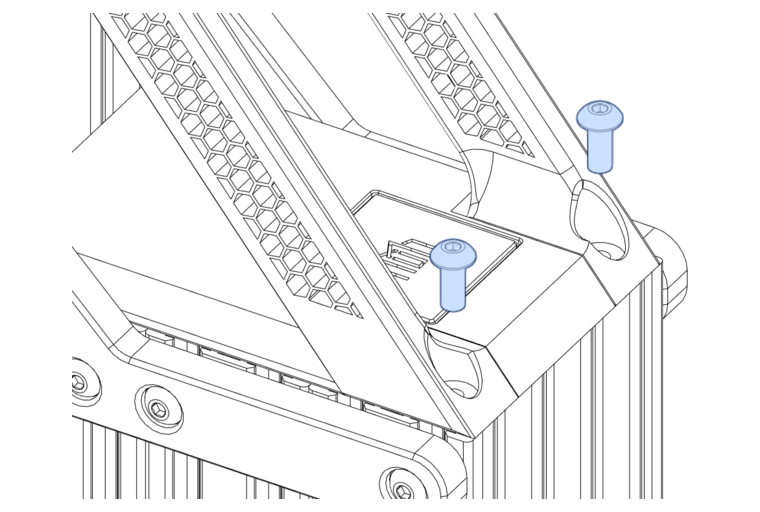
And at the top using M5x12mm BHCS.
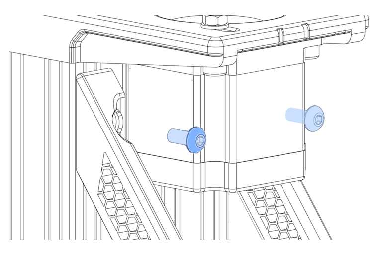
Cable Management
Components Required
3 x M3 Heat-set Insert
2 x M5x12mm BHCS
1 x Z Drag-Chain Mount (1)
1 x Z Cable Redirect Hook (2)
- Print this part using the recommended settings!
- Print this part using the recommended settings!
Install the M3 heat-set inserts into the Z Drag-Chain Mount.
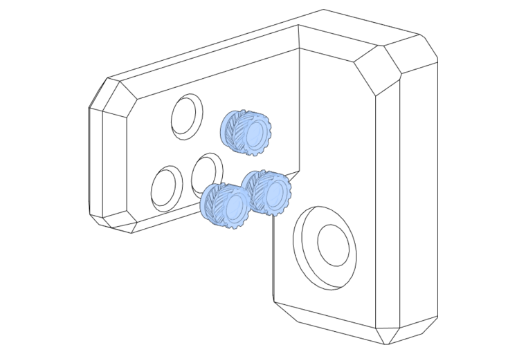
Install the Z Drag-Chain mount and Cable Redirect Hook using M5x12mm BHCS.
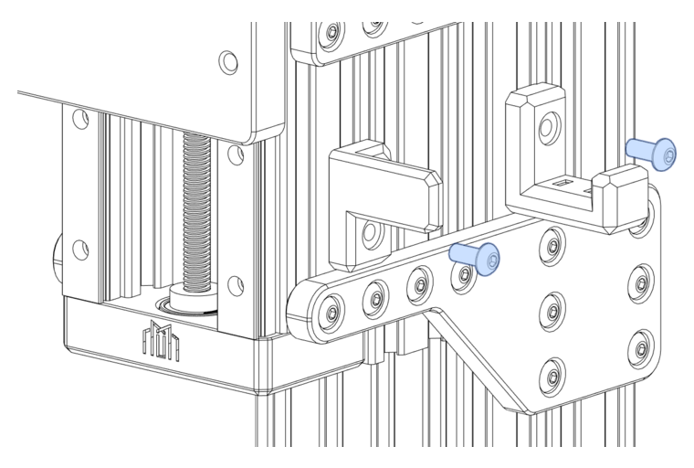
Joining Y- and Z-Axes (Standard)
Note
If you have FMJ plates, skip to Joining Y- and Z-Axes (FMJ)
Components Required
18 x M5x12mm BHCS
1 x Assembled Y-Axis
1 x Assembled Z Axis
1 x Joining Plate A (1)
1 x Joining Plate A Mirror (2)
- Print this part using the recommended settings!
- Print this part using the recommended settings!
Attach the assembled Y- and Z-Axes to each other using M5x12mm BHCS through the joining plates.
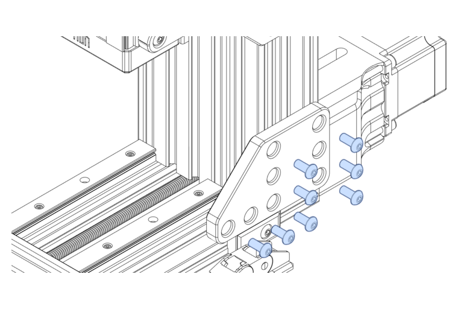
Joining Y- and Z-Axes (FMJ)
Note
If you do not have FMJ plates, follow Joining Y- and Z-Axes (Standard) above.
Components Required
8 x M5x12mm BHCS
1 x Assembled Y-Axis
1 x Assembled Z Axis with FMJ
Attach the assembled Y- and Z-Axes to each other using M5x12mm BHCS through the bottom row of holes in the FMJ.
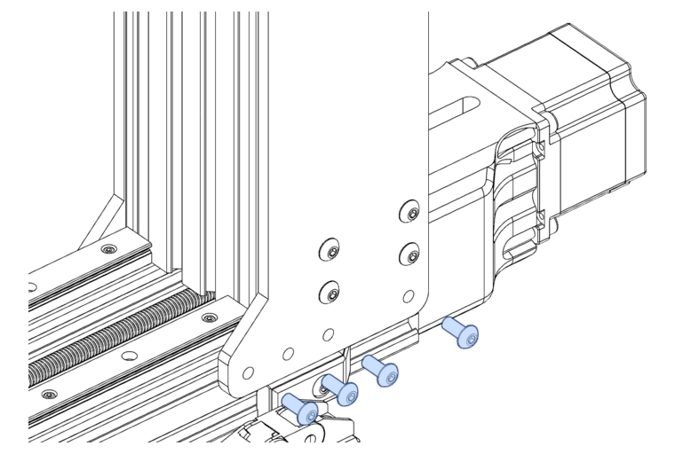
Y-Axis Motor Mount
Attach the Y-Axis Motor Mount to the Z-Axis using M5x12mm BHCS.
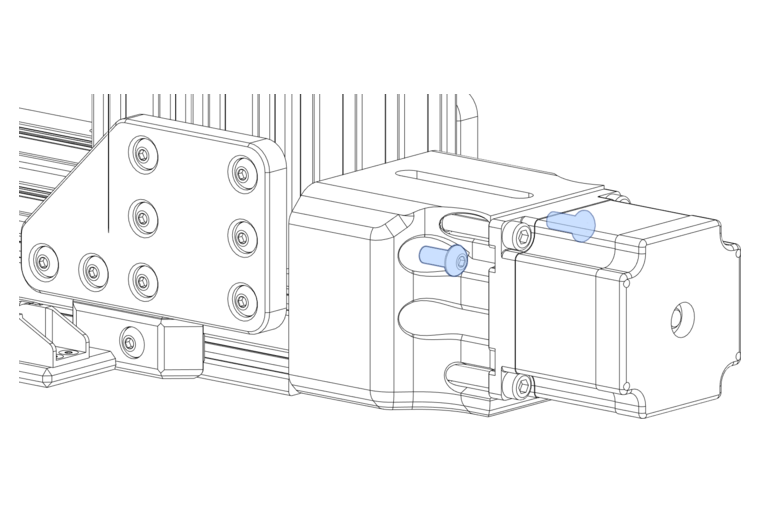
Spindle Mount
Components Required
4 x M5x100mm BHCS
4 x M5 Washer
2 x M3 Heat-set Insert
1 x Spindle Mount Part A (1)
1 x Spindle Mount Part B (2)
- Print this part using the recommended settings!
- Print this part using the recommended settings!
Install M3 Heat-set inserts into Spindle Mount Part B.
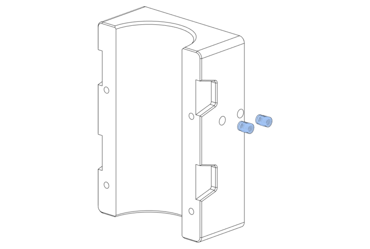
Pass the M5x100mm BHCS through the M5 washers and into Spindle Mount Part A and B.
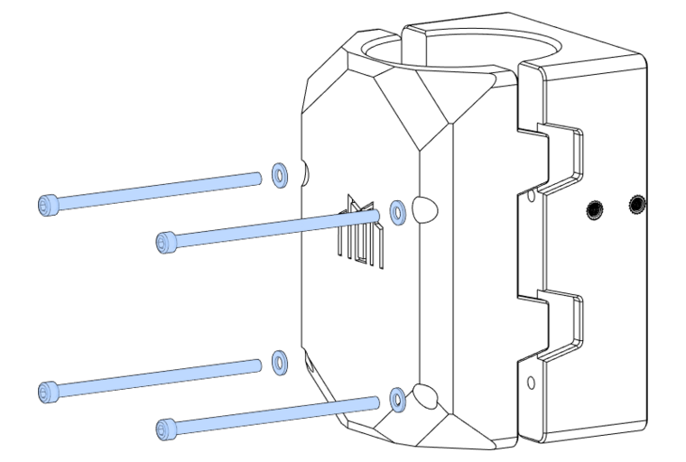
Install Spindle Mount
Components Required
1 x Spindle Mount
4 x M5 Nyloc Nuts
It has come time to install your spindle mount - but do not install your spindle at this point.
Bolt the M5x100mm BHCS through the Z-Axis Mounting Plate
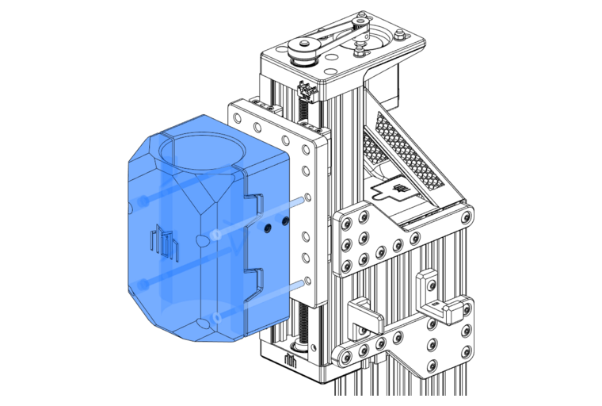
Attach M5 Nyloc nuts on the back side.
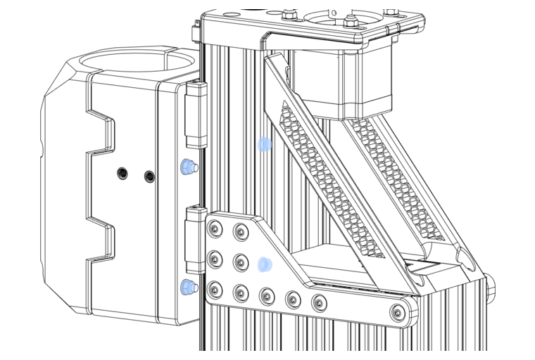
Warning
Do not tighten these nuts yet!
Optional: Logo insert
Components Required
1 x Millennium Machines Logo (1)
1 x Glue
- Print this part using the recommended settings!
If you wish at this point, you can glue in your Millennium Machines Logo.
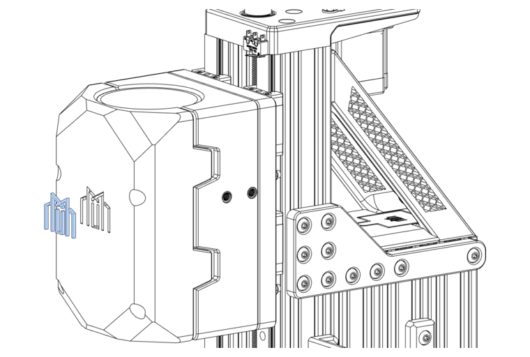
Cable Management... Continued
Components Required
6 x M3x6 FHCS
3 x M3 Heat-set Insert
2 x M5x12 BHCS
1 x Z Drag-Chain Mount B (1)
1 x Drag Chain
- Print this part using the recommended settings!
Install the M3 Heat-set inserts into the Z Drag-Chain Mount B.
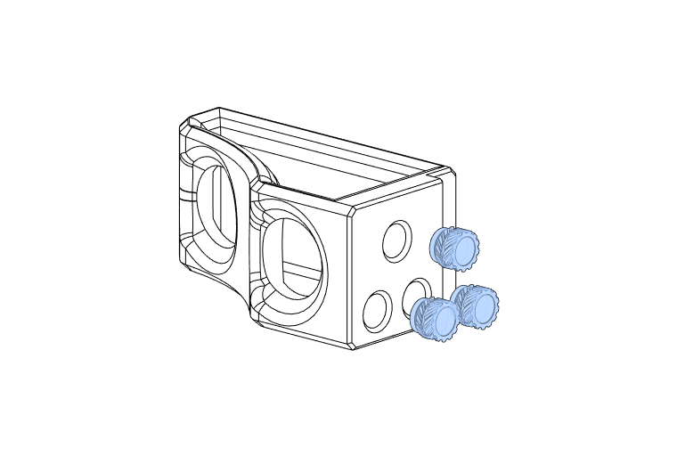
Attach Z Drag-Chain Mount B to the Spindle Mount using M5x12mm BHCS.
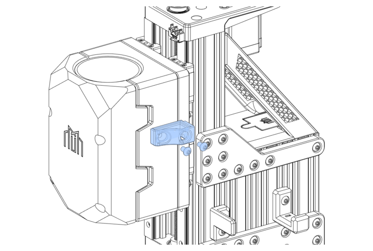
Use M3x6 FHCS to attach the Drag Chain floating and fixed ends to the drag chain mounts.
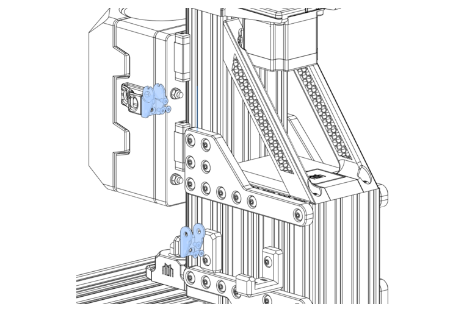
Clip the drag chain body into place.
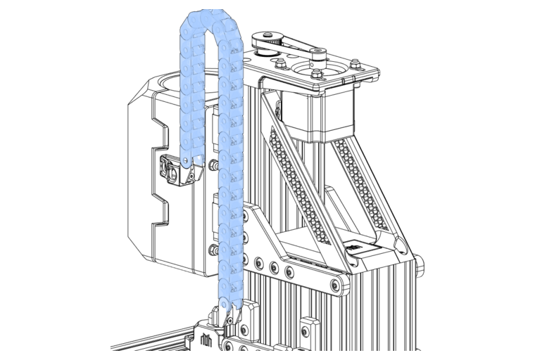